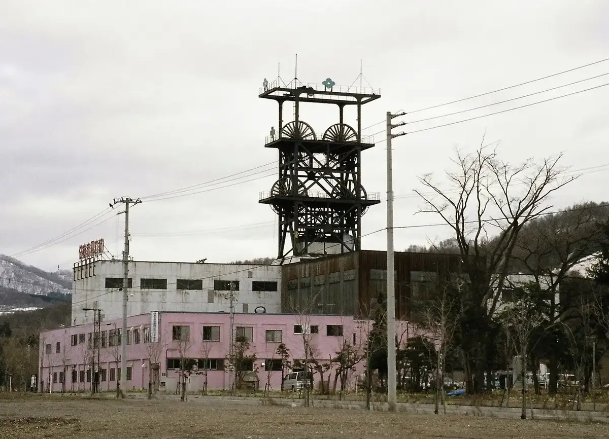
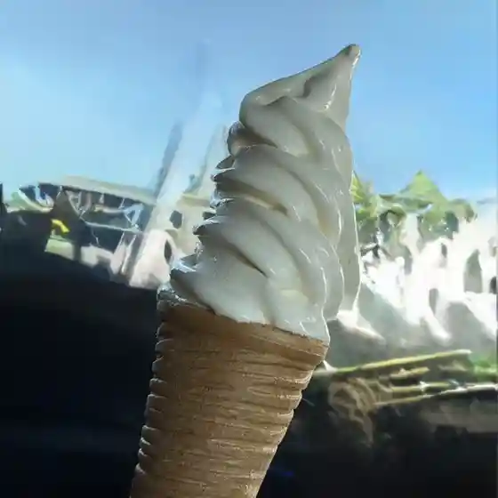
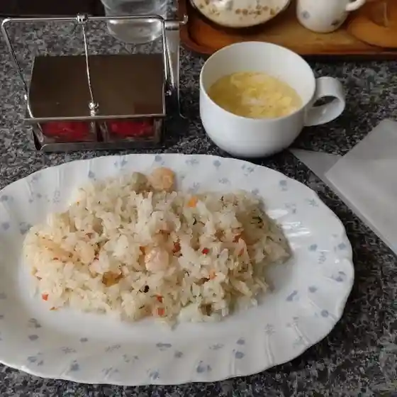
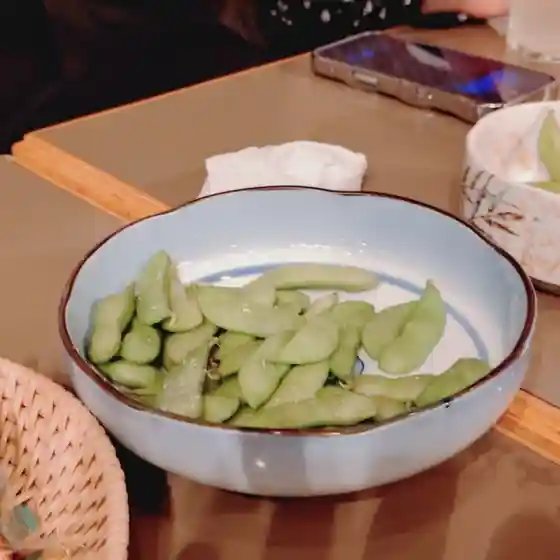
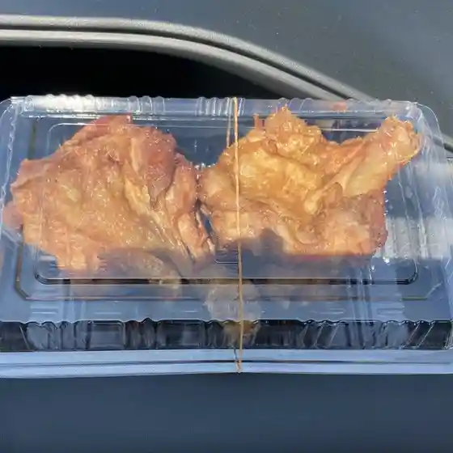
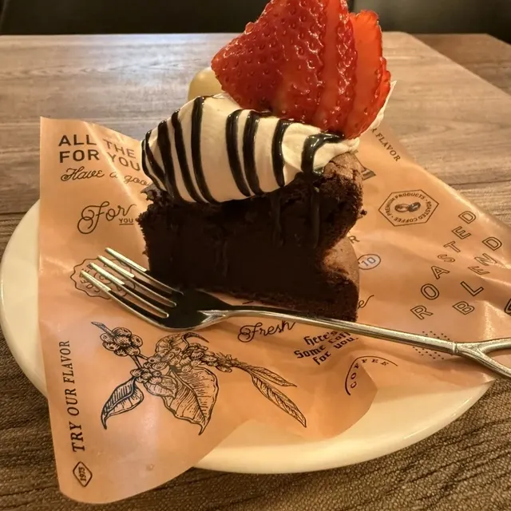
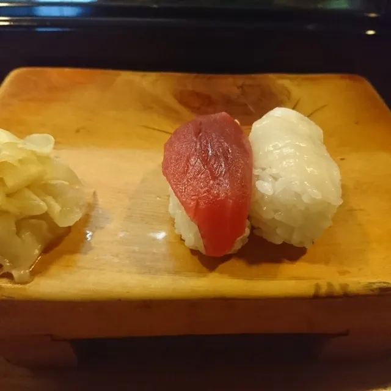
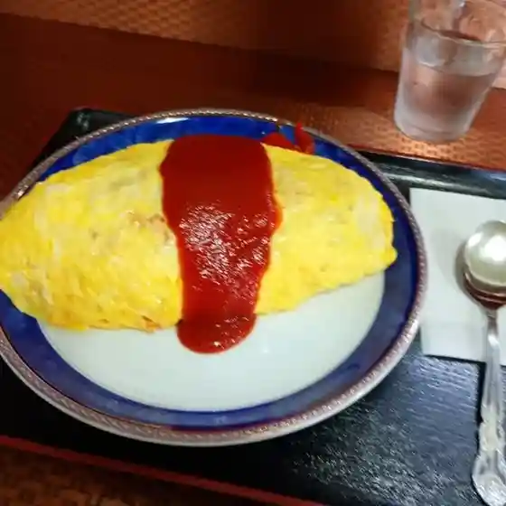
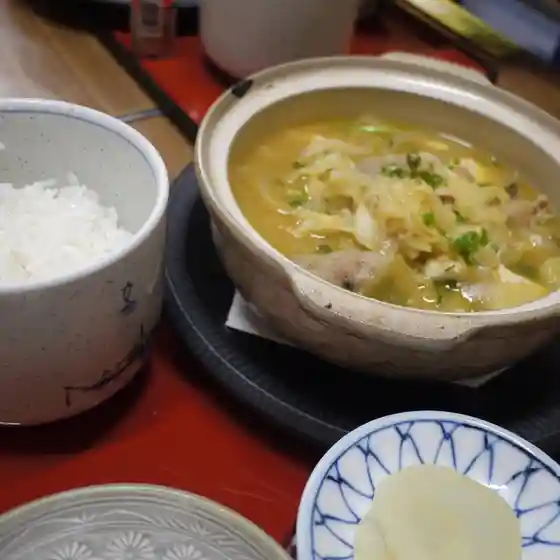

Akabira
Akabira · Hokkaido
Akabira
Highlighted on the Hokkaido map.

Stay
コテージ 虹の山荘
Niji no Sanso Cottages
Cottages at Elm Kogen Resort in Akabira, Hokkaido.
エルム高原家族旅行村
Elm Kogen Family Travel Village
Year-round campground in Akabira, Hokkaido.
Dining
情報発信基地アカビラベース

Jouhouhasshin Kichi Akabirabeesu
マンデリン喫茶

Manderin Kissa
スナック花園

Sunakku Hanazono
暖らん

Dan Ran
アカビラボ

Akabirabo
ゆき寿司

Yuki Sushi
味の美和

Aji No Miwa
八千代寿司

Yachiyo Sushi
滝本商店
Takimoto Shouten
米森商店
Yonemori Shouten
大衆居酒屋 赤平駅前食堂
Taishuu Izakaya Akabira Ekimae Shokudou
いたがきカフェ
Itagaki Kafe
焼肉の滝本
Yakiniku No Takimoto
珍来
Chin Rai
コープさっぽろ あかびら店
Koopu Sapporo Akabira Mise
岸下餅店
Kishi Shita Mochi Mise
金剛園
Kongou Sono
やまどり
Yamadori
カフェ ルフト
Kafe Rufuto
柳屋食堂
Yanagi Ya Shokudou
花ちょうちん
Hana Chouchin
富屋
Tomi Ya
日髙屋製菓
Nichi Seika
おでん いしの
Oden Ishino